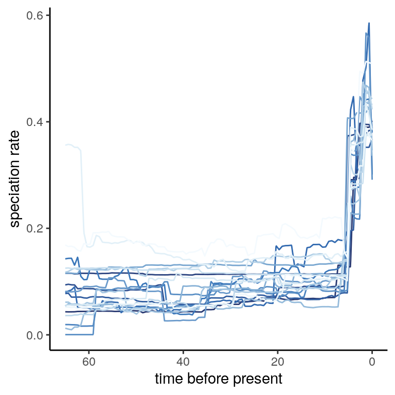

7 Exploring the posterior
Until this point, we have only considered point estimates for the fitted birth-death models. If we only consider the maximum-likelihood estimates, or the posterior median rates, it is easy to forget that there is often substantial variability in the estimated speciation and extinction rates. Previously we asked the question, if patterns in the posterior median rates are robust to the congruence class. What happens if we want to take into account the estimation error? Inspecting a series of samples in the posterior distribution is one way to assess this question.
7.1 Reading the posterior
In ACDC, we have included functionality to read RevBayes log outputs.
data(primates_ebd_log)
posterior <- read.RevBayes(primates_ebd_log, n_times = 1000,
max_t = 65, n_samples = 20)This yields a list of twenty models that are sampled from the posterior. Each sample is equally spaced on the MCMC iterations, meaning that we minimized the autocorrelation among the posterior samples. In ACDC we have included functionality to sample the congruence class, while also taking into account the variation in birth-death models in the posterior distribution.
7.2 Sampling congruent models in the posterior
The function sample.congruence.class.posterior iterates over each sample from the posterior, and draws for each sample another 20 models that are congruent with their respective posterior sample. In this example, we draw 20 alternative extinction rate functions, under an autocorrelated HSMRF distribution starting at a log-normal \(\mu_0\) with a median of 0.1. The rejection sampling makes sure that any models with a rate higher than 1.0 is discarded. sample.congruence.class.posterior is completely linked to sample.basic.models, and any additional parameters are directly passed to sample.basic.models(...).
samples <- sample.congruence.class.posterior(posterior,
num.samples = 20,
rate.type = "extinction",
rate0.median = 0.1,
model = "MRF",
MRF.type = "HSMRF",
max.rate = 1.0)This example yields a list of 20 congruence classes, represented by their 1 reference posterior model, and additional 20 congruent models each, totaling 420 models. First we will plot the rate functions in the posterior:
## We name each posterior sample for plotting purposes
l <- list()
for (i in seq_along(posterior)){
df <- model2df(posterior[[i]])
df$name <- paste0("posterior", i)
l[[i]] <- df
}
df_posterior <- bind_rows(l)
col_lambda <- colorspace::sequential_hcl(palette = "Blues", n = length(posterior))
p <- bind_rows(df_posterior) %>%
dplyr::filter(rate == "Speciation") %>%
ggplot(aes(x = Time, y = value, color = name)) +
geom_line() +
scale_x_reverse() +
theme_classic() +
scale_color_manual(values = col_lambda) +
labs(x = "time before present", y = "speciation rate") +
theme(legend.position = "none")
plot(p)
Evidently, the posterior rates exhibit a lot more rate variation than we saw from the posterior median. What happens if we inspect the twenty congruence classes we just explored, in a visual sense? To do so, we may use the summarize.posterior function. Similar to summarize.trends, it will plot the directional trends in the speciation rate through time. The only difference is that now, the y-axis is sorted, so that each row no longer represents a model.
Figure 7.1: Summary of directional trends in 20 posterior samples, and for each of those 20 samples, 20 additional congruent models.
In contrast to the previous summaries (Section 5.1), the congruence classes in the posterior samples depict a much more ambiguous patterns of the directional trends. There is still strong support for two sharp increases in speciation rate, followed by a decrease toward the near present, but the signal is not equivocal. In the end, with finite amounts of data, it may seem that non-identifiability (the congruence class) in diversification rate models is not as much of a problem as uncertainty in the estimated diversification rates themselves.